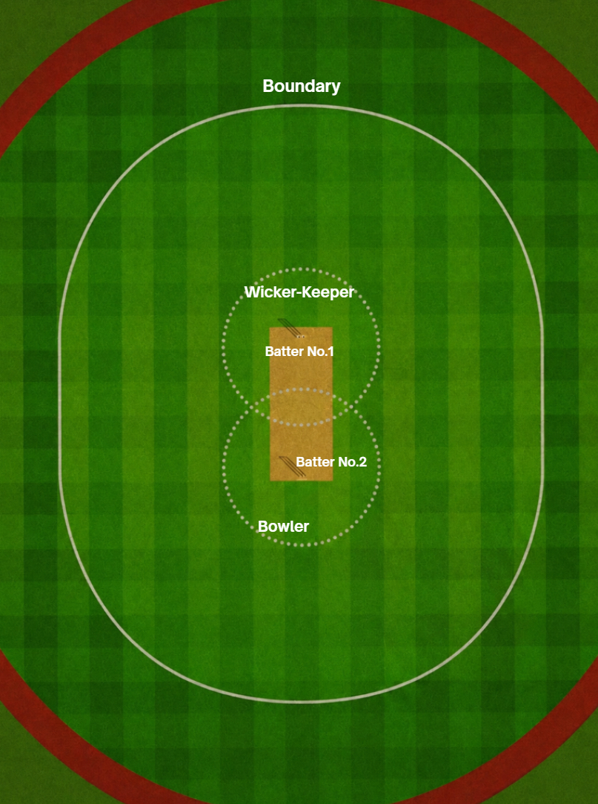
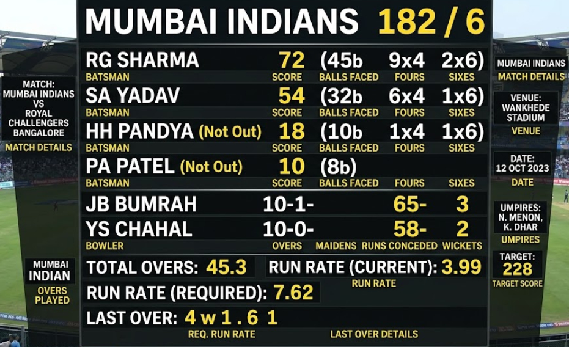
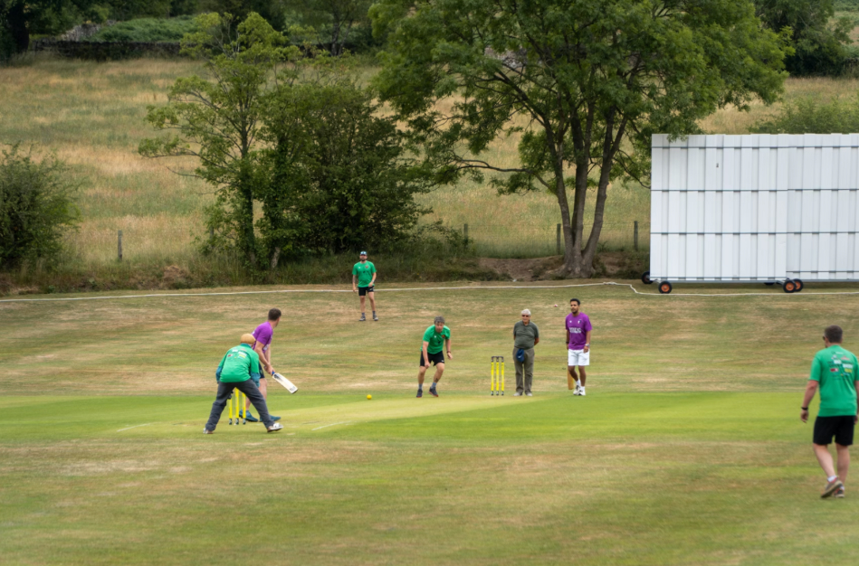
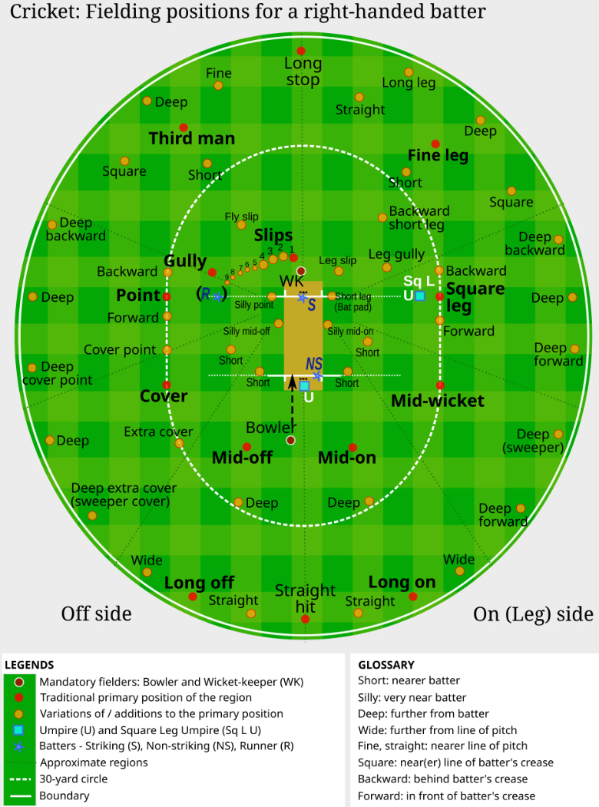
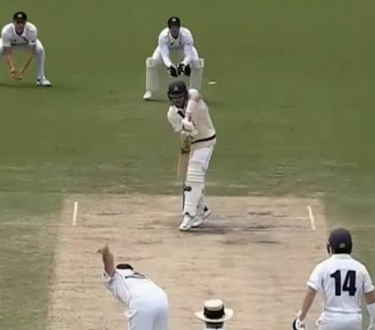
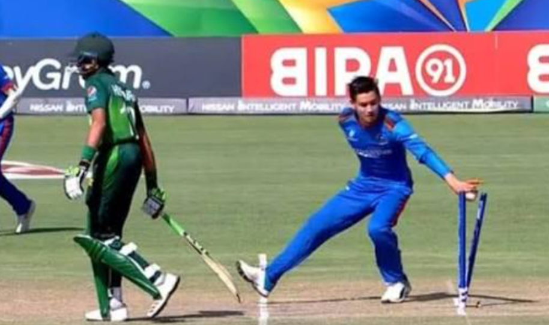

Cricket is a bat-and-ball game played between two teams of 11 players each. The main objective is simple: score more runs than the opposition.
The Pitch: The action happens on a 22-yard rectangular strip in the center of the field, with three wooden stakes called wickets at each end.
Batter vs. Bowler: The bowler throws (bowls) the ball from one end to hit the wicket at the other end. The batter tries to defend the wicket and hit the ball away.
Batters score runs in two main ways:
Running: After hitting the ball, the two batters on the pitch run to the opposite ends. Each successful swap equals 1 run.
Boundaries: If the ball hits the outer boundary line of the field, it scores automatic runs.
4 runs: If the ball bounces before crossing the line.
6 runs: If the ball crosses the line without bouncing (a home run equivalent).
The fielding team wants to get 10 batters out (dismissed) to end the innings. The most common ways to get out are:
Bowled: The bowler's delivery gets past the batter and hits the wickets.
Caught: The batter hits the ball into the air, and a fielder catches it before it touches the ground.
Leg Before Wicket (LBW): The ball hits the batter's leg instead of the bat, and the umpire judges that it would have hit the wickets.
Run Out / Stumped: A fielder throws the ball into the wickets while the batter is outside their safe ground (crease).
Overs: The game is measured in "overs." One over equals 6 legal balls bowled by a single bowler.
Innings: One team bats while the other fields. Once the batting team loses 10 wickets or their overs run out, the teams swap roles.



In cricket, fielding positions are highly strategic and change constantly depending on the style of the bowler and the tactics of the captain. The field is divided into two halves based on where the batter stands: the Off-Side (the side the batter faces) and the Leg-Side (also called the On-Side, which is behind the batter's back).
Here are the essential rules and concepts governing cricket fielding positions:
While a captain can technically place fielders almost anywhere, the official laws of cricket enforce a few strict limits:
The Behind-the-Leg-Side Rule (Law 28.4): There can never be more than two fielders on the leg-side behind the batter's popping crease (the "quarter" of the field behind square leg). This rule was introduced historically to prevent dangerous bodyline bowling tactics.
The Wicketkeeper: This is the only fielder permitted to wear external leg guards (pads) and specialized catching gloves. They must remain entirely behind the stumps until the ball passes the batter or is hit.
Fielding positions are generally categorized by how close they are to the batter:
Attacking / Catching Positions: Placed incredibly close to the batter to catch edges.
Slips: Lined up next to the wicketkeeper on the off-side to catch deflections off the bat.
Gully: Positioned just wider than the slips for flying edges.
Silly Positions (Silly Point, Short Leg): Fielders standing just feet away from the batter, wearing helmets for safety, looking for quick bat-pad catches.
Inner Ring (Saving the Single): Placed about 20-30 yards away from the batter to stop quick runs.
Point & Cover: Crucial off-side positions that field high-velocity horizontal bat shots (like cuts and drives).
Mid-Off & Mid-On: Positioned on either side of the bowler to stop straight drives.
The Outfield (Deep Positions): Placed right on the boundary rope to prevent boundaries (4s and 6s) and catch high mishit shots.
Deep Mid-Wicket / Long-On: Popular targets for powerful leg-side hitting.
Third Man: Deep on the off-side behind the wicket, saving runs from deflections.



An LBW dismissal is one of the most complex decisions an umpire makes. For a batter to be given out LBW, three strict conditions must be met:
The Pitching: The ball must pitch (bounce) either directly in line with the stumps or on the "off-side" (the side the batter faces). If it pitches on the "leg-side" (behind the batter's foot), they cannot be out LBW.
The Impact: The ball must hit the batter's pad/body in line with the stumps. However, if the batter is making a genuine attempt to hit the ball with their bat, the impact rules loosen slightly depending on the trajectory.
The Wickets: The umpire must judge that the ball's trajectory would have gone on to crash into the stumps if the pad hadn't blocked it.
In limited-overs cricket (ODI and T20), fielding teams face strict limits on where they can position players to prevent defensive blockades and encourage high-scoring shots:
Mandatory Powerplay (Overs 1-10 in ODIs, 1-6 in T20s): Only two fielders are allowed outside the 30-yard inner circle.
Middle Overs: The restriction eases, allowing up to four or five fielders outside the circle depending on the specific format.
If a bowler delivers a No-Ball by overstepping the front crease line with their foot, the batting team gains two massive advantages:
They are awarded 1 penalty run.
The very next delivery is designated a Free Hit. On a Free Hit, the batter cannot be dismissed by most traditional methods (like being caught, bowled, or LBW). They can only be run out, stumped, or hit the ball twice.
When rain or bad light interrupts a limited-overs match, the game isn't simply reset. Officials use a complex mathematical formula called the DLS Method.
Instead of just looking at runs, the formula calculates how many "resources" a team has left, combining overs remaining and wickets lost.
If the team batting second has their innings shortened, the DLS method calculates a revised, often higher target score based on the resources they have available.
Dead Ball: A ball becomes "dead" when it finally settles in the hands of the wicketkeeper or bowler, or when a boundary is scored. No runs can be scored and no wickets can fall once the ball is dead.
The "Mankad": If the non-striker batter leaves their safe ground (crease) before the bowler has actually released the ball, the bowler is legally permitted to whip off the bails and run them out. While historically controversial, it is strictly legal under official ICC rules.